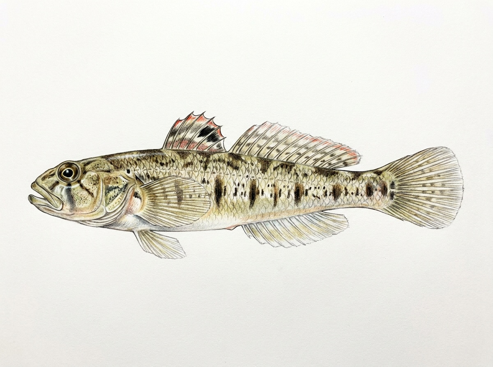

Malabar Goby
Stenogobius malabaricus
Family: Gobiidae
The Malabar Goby (Stenogobius malabaricus), known locally as වැලි ගොව්වා (Weligovwa), is a coastal and freshwater goby belonging to the family Gobiidae. Like other gobies, it features two separate dorsal fins and fused pelvic fins that form a cup-like sucker disc, allowing it to anchor against water currents along riverbeds. It is characterized by a slightly compressed, subcylindrical body, a terminal mouth, and distinctive vertical dark bands or blotches running along its yellowish-brown sides. Commonly inhabiting lower river stretches, estuaries, and tidal zones across Sri Lanka, this bottom-dwelling species feeds mainly on micro-invertebrates, organic detritus, and small aquatic organisms found in sandy or muddy substrates.